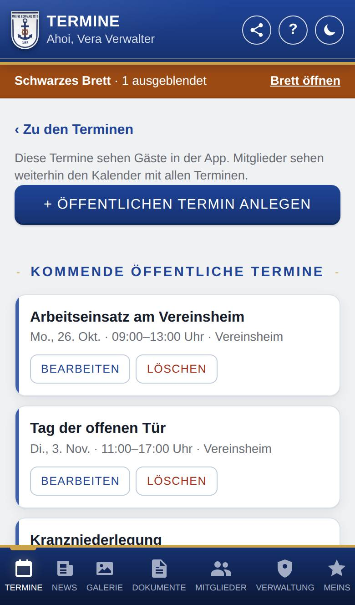
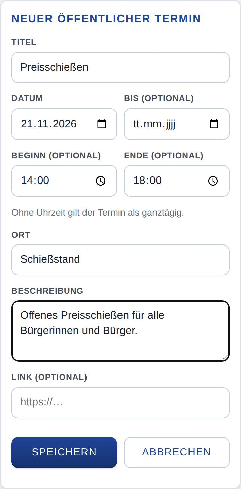

Öffentliche Termine verwalten
Nur, wenn Termine eingeschaltet ist.
Hier legst du die öffentlichen Termine der Marinekompanie Lank an, änderst und löschst sie. Diese Termine sieht jeder in der App, auch ohne Anmeldung.

So öffnest du die Seite
Tippe unten auf Termine und dann oben auf Öffentliche Termine verwalten.
Was du hier siehst
- ‹ Zu den Terminen: zurück zu Termine.
- + Öffentlichen Termin anlegen: öffnet das Formular für einen neuen Termin.
- Kommende öffentliche Termine: alle kommenden Termine mit Datum, Uhrzeit und Ort, jeder mit Bearbeiten und Löschen.
So gehst du vor
Einen Termin anlegen
- Tippe auf + Öffentlichen Termin anlegen.
- Trage Titel und Datum ein. Beides ist Pflicht.
- Dauert der Termin mehrere Tage, trage unter Bis (optional) den letzten Tag ein.
- Trage bei Bedarf Beginn (optional) und Ende (optional) ein. Ohne Uhrzeit gilt der Termin als ganztägig. Ein Ende braucht auch einen Beginn.
- Ergänze Ort, Beschreibung und einen Link (optional), wenn du magst. Der Link muss mit http:// oder https:// beginnen.
- Tippe auf Speichern. Es erscheint „Termin angelegt“.

Einen Termin ändern
- Tippe beim Termin auf Bearbeiten. Oben öffnet sich das Formular Termin bearbeiten.
- Ändere die Angaben.
- Tippe auf Speichern. Mit Abbrechen bleibt alles, wie es war.
Einen Termin löschen
- Tippe beim Termin auf Löschen.
- Bestätige die Rückfrage. Der Termin ist sofort weg.
Gut zu wissen
- Vergangene Termine verschwinden von selbst aus der Liste.
- Nutzt die Marinekompanie Lank auch ihren internen Kalender, sehen angemeldete Mitglied und Personen mit dem internen Kalender (z. B. Anwärter) unter Termine stattdessen diesen Kalender. Trag öffentliche Termine, die auch sie sehen sollen, deshalb zusätzlich dort ein. Die internen Termine kommen nicht von hier, sondern aus diesem Kalender.
- Wer Benachrichtigungen für Termine eingeschaltet hat und die öffentlichen Termine sieht (z. B. Gäste), bekommt bei einem neuen Termin „Neuer Termin“. Änderst du später Datum, Uhrzeit oder Ort, kommt „Termin geändert“. Änderungen nur am Titel oder an der Beschreibung lösen keine Benachrichtigung aus, und für vergangene Termine kommt nichts.
Für Fortgeschrittene: Läuft die App über eine WordPress-Webseite, zeigt der Shortcode [kompanie_termine] die öffentlichen Termine auch auf der Webseite.